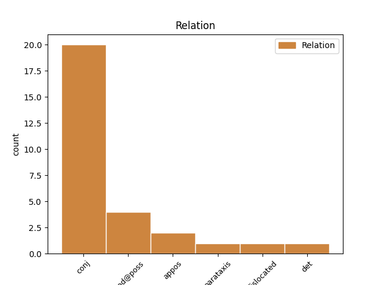
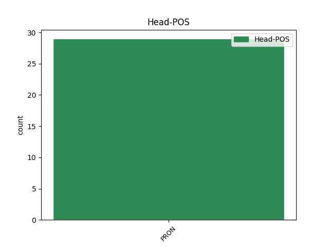
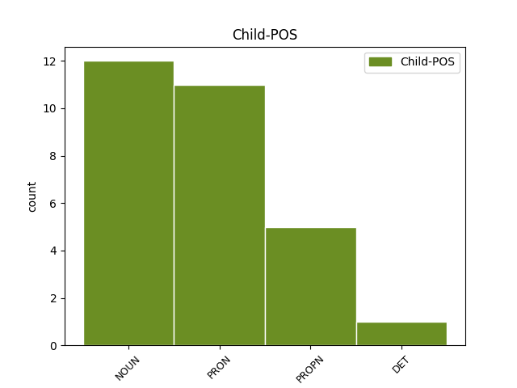

Distribution of features within this leaf



Agreement Rules sorted by frequency.
- When the dependent token is the conjunct(conj) of the head token, and the head token is PRON and the dependent token is NOUN.
1 Då _ _ _ _ 0 _ _ _
2 var _ _ _ _ 0 _ _ _
3 han han PRON PERS-P3SG-NOM Case=Nom|Definite=Def|Gender=Com|Number=Sing|PronType=Prs 0 _ _ _
4 och _ _ _ _ 0 _ _ _
5 hans _ _ _ _ 0 _ _ _
6 fantasibilder fantasibild NOUN PL-IND-NOM Case=Nom|Definite=Ind|Gender=Com|Number=Plur 3 conj _ _
7 fortfarande _ _ _ _ 0 _ _ _
8 fria _ _ _ _ 0 _ _ _
9 , _ _ _ _ 0 _ _ _
10 men _ _ _ _ 0 _ _ _
11 sedan _ _ _ _ 0 _ _ _
12 blev _ _ _ _ 0 _ _ _
13 guldet _ _ _ _ 0 _ _ _
14 omkring _ _ _ _ 0 _ _ _
15 honom _ _ _ _ 0 _ _ _
16 alltmer _ _ _ _ 0 _ _ _
17 orörligt _ _ _ _ 0 _ _ _
18 och _ _ _ _ 0 _ _ _
19 han _ _ _ _ 0 _ _ _
20 började _ _ _ _ 0 _ _ _
21 räkna _ _ _ _ 0 _ _ _
22 det _ _ _ _ 0 _ _ _
23 . _ _ _ _ 0 _ _ _
1 Det _ _ _ _ 0 _ _ _
2 blev _ _ _ _ 0 _ _ _
3 ingenting _ _ _ _ 0 _ _ _
4 kvar _ _ _ _ 0 _ _ _
5 i _ _ _ _ 0 _ _ _
6 lokalen _ _ _ _ 0 _ _ _
7 utom _ _ _ _ 0 _ _ _
8 hon _ _ _ _ 0 _ _ _
9 och _ _ _ _ 0 _ _ _
10 jag _ _ _ _ 0 _ _ _
11 , _ _ _ _ 0 _ _ _
12 hon hon PRON PERS-P3SG-NOM Case=Nom|Definite=Def|Gender=Com|Number=Sing|PronType=Prs 0 _ _ _
13 och _ _ _ _ 0 _ _ _
14 jag jag PRON PERS-P1SG-NOM Case=Nom|Definite=Def|Gender=Com|Number=Sing|PronType=Prs 12 conj _ _
15 hypnotiserade _ _ _ _ 0 _ _ _
16 av _ _ _ _ 0 _ _ _
17 varandra _ _ _ _ 0 _ _ _
18 , _ _ _ _ 0 _ _ _
19 oförmögna _ _ _ _ 0 _ _ _
20 att _ _ _ _ 0 _ _ _
21 tala _ _ _ _ 0 _ _ _
22 på _ _ _ _ 0 _ _ _
23 grund _ _ _ _ 0 _ _ _
24 av _ _ _ _ 0 _ _ _
25 vinden _ _ _ _ 0 _ _ _
26 . _ _ _ _ 0 _ _ _
1 Han _ _ _ _ 0 _ _ _
2 bevistade _ _ _ _ 0 _ _ _
3 flertalet _ _ _ _ 0 _ _ _
4 officiella _ _ _ _ 0 _ _ _
5 evenemang _ _ _ _ 0 _ _ _
6 ( _ _ _ _ 0 _ _ _
7 han han PRON PERS-P3SG-NOM Case=Nom|Definite=Def|Gender=Com|Number=Sing|PronType=Prs 0 _ _ _
8 och _ _ _ _ 0 _ _ _
9 Roly Roly PROPN SG-NOM Case=Nom 7 conj _ _
10 hälsade _ _ _ _ 0 _ _ _
11 med _ _ _ _ 0 _ _ _
12 spelad _ _ _ _ 0 _ _ _
13 överraskning _ _ _ _ 0 _ _ _
14 på _ _ _ _ 0 _ _ _
15 varandra _ _ _ _ 0 _ _ _
16 när _ _ _ _ 0 _ _ _
17 de _ _ _ _ 0 _ _ _
18 träffades _ _ _ _ 0 _ _ _
19 i _ _ _ _ 0 _ _ _
20 huset _ _ _ _ 0 _ _ _
21 , _ _ _ _ 0 _ _ _
22 halvklädda _ _ _ _ 0 _ _ _
23 i _ _ _ _ 0 _ _ _
24 smoking _ _ _ _ 0 _ _ _
25 eller _ _ _ _ 0 _ _ _
26 frack _ _ _ _ 0 _ _ _
27 varenda _ _ _ _ 0 _ _ _
28 kväll _ _ _ _ 0 _ _ _
29 ) _ _ _ _ 0 _ _ _
30 , _ _ _ _ 0 _ _ _
31 men _ _ _ _ 0 _ _ _
32 de _ _ _ _ 0 _ _ _
33 verkliga _ _ _ _ 0 _ _ _
34 tillställningarna _ _ _ _ 0 _ _ _
35 försiggick _ _ _ _ 0 _ _ _
36 före _ _ _ _ 0 _ _ _
37 eller _ _ _ _ 0 _ _ _
38 efter _ _ _ _ 0 _ _ _
39 . _ _ _ _ 0 _ _ _
1 Men _ _ _ _ 0 _ _ _
2 båda _ _ _ _ 0 _ _ _
3 visste _ _ _ _ 0 _ _ _
4 att _ _ _ _ 0 _ _ _
5 det _ _ _ _ 0 _ _ _
6 var _ _ _ _ 0 _ _ _
7 så _ _ _ _ 0 _ _ _
8 ; _ _ _ _ 0 _ _ _
9 på _ _ _ _ 0 _ _ _
10 den _ _ _ _ 0 _ _ _
11 tiden _ _ _ _ 0 _ _ _
12 gällde _ _ _ _ 0 _ _ _
13 det _ _ _ _ 0 _ _ _
14 att _ _ _ _ 0 _ _ _
15 stärka _ _ _ _ 0 _ _ _
16 Adamson _ _ _ _ 0 _ _ _
17 Mwetas _ _ _ _ 0 _ _ _
18 självtillit _ _ _ _ 0 _ _ _
19 genom _ _ _ _ 0 _ _ _
20 att _ _ _ _ 0 _ _ _
21 förutsätta _ _ _ _ 0 _ _ _
22 en _ _ _ _ 0 _ _ _
23 framtid _ _ _ _ 0 _ _ _
24 som _ _ _ _ 0 _ _ _
25 var _ _ _ _ 0 _ _ _
26 verklig _ _ _ _ 0 _ _ _
27 därför _ _ _ _ 0 _ _ _
28 att _ _ _ _ 0 _ _ _
29 man man PRON PERS-P3-NOM Case=Nom|Definite=Ind|Gender=Com|Number=Sing|PronType=Ind 0 _ _ _
30 själv _ _ _ _ 0 _ _ _
31 , _ _ _ _ 0 _ _ _
32 en _ _ _ _ 0 _ _ _
33 vit _ _ _ _ 0 _ _ _
34 person person NOUN SG-IND-NOM Case=Nom|Definite=Ind|Gender=Com|Number=Sing 29 appos _ _
35 som _ _ _ _ 0 _ _ _
36 inte _ _ _ _ 0 _ _ _
37 personligen _ _ _ _ 0 _ _ _
38 hade _ _ _ _ 0 _ _ _
39 någonting _ _ _ _ 0 _ _ _
40 att _ _ _ _ 0 _ _ _
41 vinna _ _ _ _ 0 _ _ _
42 på _ _ _ _ 0 _ _ _
43 det _ _ _ _ 0 _ _ _
44 , _ _ _ _ 0 _ _ _
45 visade _ _ _ _ 0 _ _ _
46 att _ _ _ _ 0 _ _ _
47 man _ _ _ _ 0 _ _ _
48 trodde _ _ _ _ 0 _ _ _
49 på _ _ _ _ 0 _ _ _
50 att _ _ _ _ 0 _ _ _
51 den _ _ _ _ 0 _ _ _
52 skulle _ _ _ _ 0 _ _ _
53 förverkligas _ _ _ _ 0 _ _ _
54 . _ _ _ _ 0 _ _ _
1 Sandbankar sandbank NOUN PL-IND-NOM Case=Nom|Definite=Ind|Gender=Com|Number=Plur 10 dislocated _ SpaceAfter=No
2 , _ _ _ _ 0 _ _ _
3 mader _ _ _ _ 0 _ _ _
4 , _ _ _ _ 0 _ _ _
5 skogar _ _ _ _ 0 _ _ _
6 , _ _ _ _ 0 _ _ _
7 vildar _ _ _ _ 0 _ _ _
8 , _ _ _ _ 0 _ _ _
9 mycket _ _ _ _ 0 _ _ _
10 litet litet PRON IND-SG Case=Nom 0 _ _ _
11 att _ _ _ _ 0 _ _ _
12 äta _ _ _ _ 0 _ _ _
13 för _ _ _ _ 0 _ _ _
14 en _ _ _ _ 0 _ _ _
15 civiliserad _ _ _ _ 0 _ _ _
16 gom _ _ _ _ 0 _ _ _
17 , _ _ _ _ 0 _ _ _
18 bara _ _ _ _ 0 _ _ _
19 Themsenvatten _ _ _ _ 0 _ _ _
20 att _ _ _ _ 0 _ _ _
21 dricka _ _ _ _ 0 _ _ _
22 . _ _ _ _ 0 _ _ _
1 Man man PRON PERS-P3-NOM Case=Nom|Definite=Ind|Gender=Com|Number=Sing|PronType=Ind 0 _ _ _
2 och _ _ _ _ 0 _ _ _
3 hustru _ _ _ _ 0 _ _ _
4 . _ _ _ _ 0 _ _ _
5 Man man PRON PERS-P3-NOM Case=Nom|Definite=Ind|Gender=Com|Number=Sing|PronType=Ind 1 parataxis _ _
6 och _ _ _ _ 0 _ _ _
7 revben _ _ _ _ 0 _ _ _
8 . _ _ _ _ 0 _ _ _
9 Vad _ _ _ _ 0 _ _ _
10 kunde _ _ _ _ 0 _ _ _
11 vara _ _ _ _ 0 _ _ _
12 mer _ _ _ _ 0 _ _ _
13 normalt _ _ _ _ 0 _ _ _
14 än _ _ _ _ 0 _ _ _
15 det _ _ _ _ 0 _ _ _
16 ? _ _ _ _ 0 _ _ _
Disagree Examples:
1 Det _ _ _ _ 0 _ _ _
2 kändes _ _ _ _ 0 _ _ _
3 som _ _ _ _ 0 _ _ _
4 att _ _ _ _ 0 _ _ _
5 ha _ _ _ _ 0 _ _ _
6 tappat _ _ _ _ 0 _ _ _
7 halva _ _ _ _ 0 _ _ _
8 sitt sin PRON RFL-SG-GEN Case=Gen|Definite=Def|Gender=Neut|Number=Sing|Poss=Yes|PronType=Prs 9 mod@poss _ _
9 jag jag PRON PERS-SG-NOM Case=Nom|Definite=Def|Gender=Com|Number=Sing|PronType=Prs 0 _ _ _
10 . _ _ _ _ 0 _ _ _
1 Den _ _ _ _ 0 _ _ _
2 amerikanska _ _ _ _ 0 _ _ _
3 firman _ _ _ _ 0 _ _ _
4 Booz _ _ _ _ 0 _ _ _
5 , _ _ _ _ 0 _ _ _
6 Allen _ _ _ _ 0 _ _ _
7 & _ _ _ _ 0 _ _ _
8 Hamilton _ _ _ _ 0 _ _ _
9 lånade _ _ _ _ 0 _ _ _
10 ut _ _ _ _ 0 _ _ _
11 en _ _ _ _ 0 _ _ _
12 av _ _ _ _ 0 _ _ _
13 sina _ _ _ _ 0 _ _ _
14 specialister _ _ _ _ 0 _ _ _
15 vid _ _ _ _ 0 _ _ _
16 namn _ _ _ _ 0 _ _ _
17 Miles _ _ _ _ 0 _ _ _
18 Copeland _ _ _ _ 0 _ _ _
19 till _ _ _ _ 0 _ _ _
20 utrikesdepartementet _ _ _ _ 0 _ _ _
21 , _ _ _ _ 0 _ _ _
22 där _ _ _ _ 0 _ _ _
23 han _ _ _ _ 0 _ _ _
24 år _ _ _ _ 0 _ _ _
25 1955 _ _ _ _ 0 _ _ _
26 ingick _ _ _ _ 0 _ _ _
27 i _ _ _ _ 0 _ _ _
28 en _ _ _ _ 0 _ _ _
29 grupp _ _ _ _ 0 _ _ _
30 som _ _ _ _ 0 _ _ _
31 kallades _ _ _ _ 0 _ _ _
32 Planeringskommittén _ _ _ _ 0 _ _ _
33 för _ _ _ _ 0 _ _ _
34 Mellanöstern _ _ _ _ 0 _ _ _
35 och _ _ _ _ 0 _ _ _
36 vars _ _ _ _ 0 _ _ _
37 huvudsyfte _ _ _ _ 0 _ _ _
38 med _ _ _ _ 0 _ _ _
39 hans _ _ _ _ 0 _ _ _
40 egna _ _ _ _ 0 _ _ _
41 ord _ _ _ _ 0 _ _ _
42 var _ _ _ _ 0 _ _ _
43 " _ _ _ _ 0 _ _ _
44 att _ _ _ _ 0 _ _ _
45 räkna _ _ _ _ 0 _ _ _
46 ut _ _ _ _ 0 _ _ _
47 olika _ _ _ _ 0 _ _ _
48 sätt _ _ _ _ 0 _ _ _
49 att _ _ _ _ 0 _ _ _
50 dra _ _ _ _ 0 _ _ _
51 fördel _ _ _ _ 0 _ _ _
52 av _ _ _ _ 0 _ _ _
53 den _ _ _ _ 0 _ _ _
54 vänskap _ _ _ _ 0 _ _ _
55 som _ _ _ _ 0 _ _ _
56 höll _ _ _ _ 0 _ _ _
57 på _ _ _ _ 0 _ _ _
58 att _ _ _ _ 0 _ _ _
59 utvecklas _ _ _ _ 0 _ _ _
60 mellan _ _ _ _ 0 _ _ _
61 oss vi PRON PERS-P1PL-ACC Case=Acc|Definite=Def|Gender=Com|Number=Plur|PronType=Prs 0 _ _ _
62 och _ _ _ _ 0 _ _ _
63 Nasser Nasser PROPN SG-NOM Case=Nom 61 conj _ SpaceAfter=No
64 " _ _ _ _ 0 _ _ _
65 . _ _ _ _ 0 _ _ _
1 Det _ _ _ _ 0 _ _ _
2 var _ _ _ _ 0 _ _ _
3 som _ _ _ _ 0 _ _ _
4 om _ _ _ _ 0 _ _ _
5 min _ _ _ _ 0 _ _ _
6 sysslolösa _ _ _ _ 0 _ _ _
7 tillvaro _ _ _ _ 0 _ _ _
8 som _ _ _ _ 0 _ _ _
9 passagerare _ _ _ _ 0 _ _ _
10 , _ _ _ _ 0 _ _ _
11 min _ _ _ _ 0 _ _ _
12 isolering _ _ _ _ 0 _ _ _
13 bland _ _ _ _ 0 _ _ _
14 dessa _ _ _ _ 0 _ _ _
15 människor _ _ _ _ 0 _ _ _
16 som _ _ _ _ 0 _ _ _
17 jag _ _ _ _ 0 _ _ _
18 saknade _ _ _ _ 0 _ _ _
19 beröringspunkter _ _ _ _ 0 _ _ _
20 med _ _ _ _ 0 _ _ _
21 , _ _ _ _ 0 _ _ _
22 det _ _ _ _ 0 _ _ _
23 oljeblanka _ _ _ _ 0 _ _ _
24 , _ _ _ _ 0 _ _ _
25 loja _ _ _ _ 0 _ _ _
26 vattnet _ _ _ _ 0 _ _ _
27 , _ _ _ _ 0 _ _ _
28 kustens _ _ _ _ 0 _ _ _
29 trista _ _ _ _ 0 _ _ _
30 enformighet _ _ _ _ 0 _ _ _
31 – _ _ _ _ 0 _ _ _
32 som _ _ _ _ 0 _ _ _
33 om _ _ _ _ 0 _ _ _
34 allt _ _ _ _ 0 _ _ _
35 detta _ _ _ _ 0 _ _ _
36 hade _ _ _ _ 0 _ _ _
37 trängt _ _ _ _ 0 _ _ _
38 sig _ _ _ _ 0 _ _ _
39 emellan _ _ _ _ 0 _ _ _
40 mig jag PRON PERS-P1SG-ACC Case=Acc|Definite=Def|Gender=Com|Number=Sing|PronType=Prs 0 _ _ _
41 och _ _ _ _ 0 _ _ _
42 tingens _ _ _ _ 0 _ _ _
43 kärna kärna NOUN SG-IND-NOM Case=Nom|Definite=Ind|Gender=Com|Number=Sing 40 conj _ SpaceAfter=No
44 , _ _ _ _ 0 _ _ _
45 fångat _ _ _ _ 0 _ _ _
46 mina _ _ _ _ 0 _ _ _
47 tankar _ _ _ _ 0 _ _ _
48 i _ _ _ _ 0 _ _ _
49 en _ _ _ _ 0 _ _ _
50 ödslig _ _ _ _ 0 _ _ _
51 och _ _ _ _ 0 _ _ _
52 meningslös _ _ _ _ 0 _ _ _
53 kräftgång _ _ _ _ 0 _ _ _
54 . _ _ _ _ 0 _ _ _
1 att _ _ _ _ 0 _ _ _
2 en _ _ _ _ 0 _ _ _
3 intensiv _ _ _ _ 0 _ _ _
4 medvetenhet _ _ _ _ 0 _ _ _
5 om _ _ _ _ 0 _ _ _
6 hans han PRON P3SG-GEN Case=Gen|Definite=Def|Poss=Yes|PronType=Prs 8 mod@poss _ _
7 eget _ _ _ _ 0 _ _ _
8 jag jag PRON PERS-SG-NOM Case=Nom|Definite=Def|Gender=Com|Number=Sing|PronType=Prs 0 _ _ _
9 sköljde _ _ _ _ 0 _ _ _
10 över _ _ _ _ 0 _ _ _
11 honom _ _ _ _ 0 _ _ _
12 som _ _ _ _ 0 _ _ _
13 om _ _ _ _ 0 _ _ _
14 något _ _ _ _ 0 _ _ _
15 stimulerande _ _ _ _ 0 _ _ _
16 medel _ _ _ _ 0 _ _ _
17 hade _ _ _ _ 0 _ _ _
18 injicerats _ _ _ _ 0 _ _ _
19 direkt _ _ _ _ 0 _ _ _
20 i _ _ _ _ 0 _ _ _
21 hans _ _ _ _ 0 _ _ _
22 ådror _ _ _ _ 0 _ _ _
23 . _ _ _ _ 0 _ _ _
1 Dando _ _ _ _ 0 _ _ _
2 hade _ _ _ _ 0 _ _ _
3 vid _ _ _ _ 0 _ _ _
4 det _ _ _ _ 0 _ _ _
5 här _ _ _ _ 0 _ _ _
6 laget _ _ _ _ 0 _ _ _
7 lyckats _ _ _ _ 0 _ _ _
8 dra _ _ _ _ 0 _ _ _
9 till _ _ _ _ 0 _ _ _
10 sig _ _ _ _ 0 _ _ _
11 ett _ _ _ _ 0 _ _ _
12 visst _ _ _ _ 0 _ _ _
13 buttert _ _ _ _ 0 _ _ _
14 , _ _ _ _ 0 _ _ _
15 förargat _ _ _ _ 0 _ _ _
16 intresse _ _ _ _ 0 _ _ _
17 från _ _ _ _ 0 _ _ _
18 en _ _ _ _ 0 _ _ _
19 ung _ _ _ _ 0 _ _ _
20 patriot _ _ _ _ 0 _ _ _
21 i _ _ _ _ 0 _ _ _
22 socialdepartementet _ _ _ _ 0 _ _ _
23 , _ _ _ _ 0 _ _ _
24 en _ _ _ _ 0 _ _ _
25 glitterögd _ _ _ _ 0 _ _ _
26 likgiltighet _ _ _ _ 0 _ _ _
27 från _ _ _ _ 0 _ _ _
28 Doris _ _ _ _ 0 _ _ _
29 Manyema _ _ _ _ 0 _ _ _
30 , _ _ _ _ 0 _ _ _
31 en _ _ _ _ 0 _ _ _
32 av _ _ _ _ 0 _ _ _
33 landets _ _ _ _ 0 _ _ _
34 tre _ _ _ _ 0 _ _ _
35 eller _ _ _ _ 0 _ _ _
36 fyra _ _ _ _ 0 _ _ _
37 kvinnor _ _ _ _ 0 _ _ _
38 med _ _ _ _ 0 _ _ _
39 akademisk _ _ _ _ 0 _ _ _
40 examen _ _ _ _ 0 _ _ _
41 , _ _ _ _ 0 _ _ _
42 och _ _ _ _ 0 _ _ _
43 ett _ _ _ _ 0 _ _ _
44 visst _ _ _ _ 0 _ _ _
45 roat _ _ _ _ 0 _ _ _
46 gillande _ _ _ _ 0 _ _ _
47 från _ _ _ _ 0 _ _ _
48 en _ _ _ _ 0 _ _ _
49 flykting _ _ _ _ 0 _ _ _
50 från _ _ _ _ 0 _ _ _
51 Sydafrika _ _ _ _ 0 _ _ _
52 , _ _ _ _ 0 _ _ _
53 vars _ _ _ _ 0 _ _ _
54 gulbruna _ _ _ _ 0 _ _ _
55 hy _ _ _ _ 0 _ _ _
56 , _ _ _ _ 0 _ _ _
57 lilla _ _ _ _ 0 _ _ _
58 näsa _ _ _ _ 0 _ _ _
59 och _ _ _ _ 0 _ _ _
60 finskurna _ _ _ _ 0 _ _ _
61 läppar _ _ _ _ 0 _ _ _
62 skilde _ _ _ _ 0 _ _ _
63 honom _ _ _ _ 0 _ _ _
64 från _ _ _ _ 0 _ _ _
65 de _ _ _ _ 0 _ _ _
66 båda båda DET TOT-PL Case=Nom|Degree=Pos|Number=Plur 67 det _ _
67 andras annan PRON ADJ-PL-GEN Case=Gen|Definite=Def|Poss=Yes|PronType=Ind 0 _ _ _
68 djupa _ _ _ _ 0 _ _ _
69 svärta _ _ _ _ 0 _ _ _
70 . _ _ _ _ 0 _ _ _